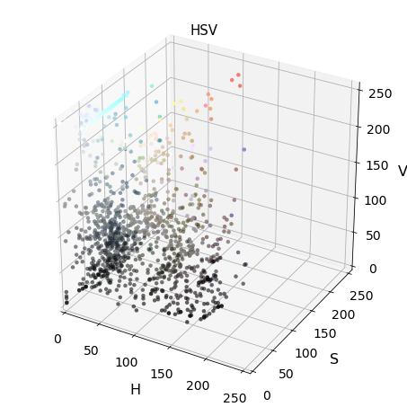
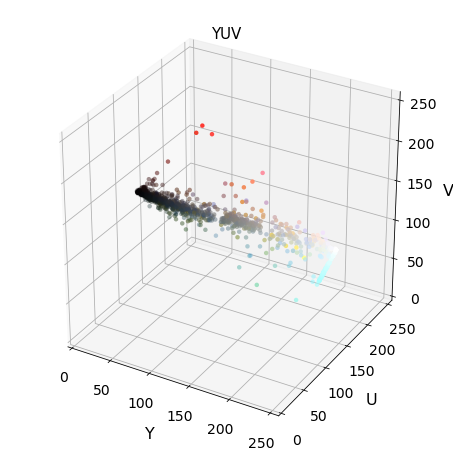
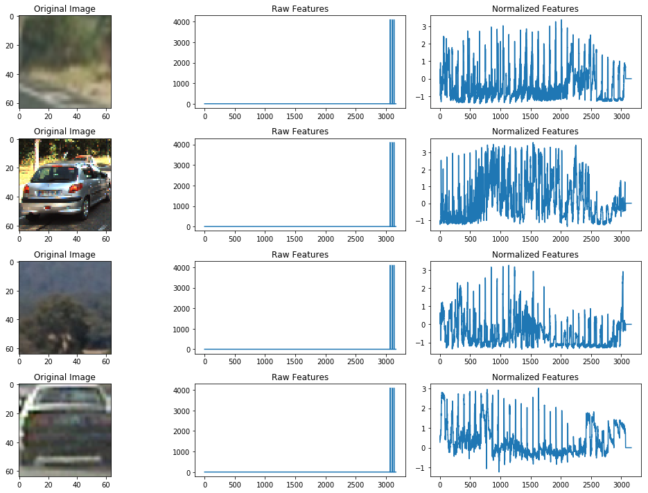
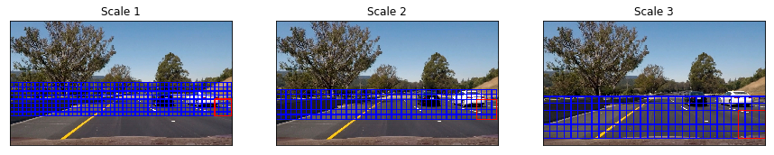

Udacity Self-Driving Car Nanodegree
CarND-Vehicle-Detection
The goals / steps of this project are the following:
-
Perform a Histogram of Oriented Gradients (HOG) feature extraction on a labeled training set of images and train a classifier Linear SVM classifier
-
Optionally, you can also apply a color transform and append binned color features, as well as histograms of color, to your HOG feature vector.
-
Note: for those first two steps don't forget to normalize your features and randomize a selection for training and testing.
-
Implement a sliding-window technique and use your trained classifier to search for vehicles in images. Run your pipeline on a video stream (start with the test_video.mp4 and later implement on full project_video.mp4) and create a heat map of recurring detections frame by frame to reject outliers and follow detected vehicles.
-
Estimate a bounding box for vehicles detected.
Imports
import matplotlib.image as mpimg import matplotlib.pyplot as plt import numpy as np import cv2 import glob from skimage.feature import hog from sklearn.preprocessing import StandardScaler from sklearn.cross_validation import train_test_split import time from sklearn.svm import LinearSVC import matplotlib.image as mpimg #import seaborn as sns from mpl_toolkits.mplot3d import Axes3D from scipy.ndimage.measurements import label
import pickle %matplotlib inline
from scipy.ndimage.measurements import label from collections import deque from moviepy.editor import VideoFileClip from IPython.display import HTML
import warnings with warnings.catch_warnings(): warnings.filterwarnings("ignore",category=DeprecationWarning)
Manual Vehicle Detection
Drawing rectangles over an image
image = mpimg.imread('car.jpg') # Define a function that takes an image, a list of bounding boxes, # and optional color tuple and line thickness as inputs # then draws boxes in that color on the output def draw_boxes(img, bboxes, color=(0, 0, 255), thick=6): # Make a copy of the image draw_img = np.copy(img) # Iterate through the bounding boxes for bbox in bboxes: # Draw a rectangle given bbox coordinates cv2.rectangle(draw_img, bbox[0], bbox[1], color, thick) # Return the image copy with boxes drawn return draw_img # Here are the bounding boxes I used bboxes = [((275, 572), (380, 510)), ((488, 563), (549, 518)), ((554, 543), (582, 522)), ((601, 555), (646, 522)), ((657, 545), (685, 517)), ((849, 678), (1135, 512))] result = draw_boxes(image, bboxes) plt.imshow(result)
<matplotlib.image.AxesImage at 0x11d760908>
Templet Matching
# Here is your draw_boxes function from the previous exercise def draw_boxes(img, bboxes, color=(0, 0, 255), thick=6): # Make a copy of the image imcopy = np.copy(img) # Iterate through the bounding boxes for bbox in bboxes: # Draw a rectangle given bbox coordinates cv2.rectangle(imcopy, bbox[0], bbox[1], color, thick) # Return the image copy with boxes drawn return imcopy # Define a function to search for template matches # and return a list of bounding boxes def find_matches(img, template_list): # Define an empty list to take bbox coords bbox_list = [] # Define matching method # Other options include: cv2.TM_CCORR_NORMED', 'cv2.TM_CCOEFF', 'cv2.TM_CCORR', # 'cv2.TM_SQDIFF', 'cv2.TM_SQDIFF_NORMED' method = cv2.TM_CCOEFF_NORMED # Iterate through template list for temp in template_list: # Read in templates one by one tmp = mpimg.imread(temp) # Use cv2.matchTemplate() to search the image result = cv2.matchTemplate(img, tmp, method) # Use cv2.minMaxLoc() to extract the location of the best match min_val, max_val, min_loc, max_loc = cv2.minMaxLoc(result) # Determine a bounding box for the match w, h = (tmp.shape[1], tmp.shape[0]) if method in [cv2.TM_SQDIFF, cv2.TM_SQDIFF_NORMED]: top_left = min_loc else: top_left = max_loc bottom_right = (top_left[0] + w, top_left[1] + h) # Append bbox position to list bbox_list.append((top_left, bottom_right)) # Return the list of bounding boxes return bbox_list
Application over a sample image
image = mpimg.imread('car.jpg') #image = mpimg.imread('temp-matching-example-2.jpg') templist = ['cutouts/cutout1.jpg', 'cutouts/cutout2.jpg', 'cutouts/cutout3.jpg', 'cutouts/cutout4.jpg', 'cutouts/cutout5.jpg', 'cutouts/cutout6.jpg'] bboxes = find_matches(image, templist) result = draw_boxes(image, bboxes) plt.imshow(result)
<matplotlib.image.AxesImage at 0x11e16a978>

Getting familiar with Data
# Read in our vehicles and non-vehicles cars = glob.glob('data/vehicles/**/*.png') notcars = glob.glob('data/non-vehicles/**/*.png')
# Define a function to return some characteristics of the dataset def data_look(car_list, notcar_list): data_dict = {} # Define a key in data_dict "n_cars" and store the number of car images data_dict["n_cars"] = len(car_list) # Define a key "n_notcars" and store the number of notcar images data_dict["n_notcars"] = len(notcar_list) # Read in a test image, either car or notcar example_img = mpimg.imread(car_list[0]) # Define a key "image_shape" and store the test image shape 3-tuple data_dict["image_shape"] = example_img.shape # Define a key "data_type" and store the data type of the test image. data_dict["data_type"] = example_img.dtype # Return data_dict return data_dict
data_info = data_look(cars, notcars) print('Your function returned a count of', data_info["n_cars"], ' cars and', data_info["n_notcars"], ' non-cars') print('of size: ',data_info["image_shape"], ' and data type:', data_info["data_type"])
Your function returned a count of 8792 cars and 8968 non-cars of size: (64, 64, 3) and data type: float32
fig = plt.figure(figsize=(10,10)) count = 1 for k in range (12): # Generate a random index to look at a car image if k%2 ==0: ind = np.random.randint(0, len(cars)) Img = mpimg.imread(cars[ind]) #fig-1 fig.add_subplot(3,4,count) plt.imshow(Img) plt.title('Car') count += 1 else: ind = np.random.randint(0, len(notcars)) Img = mpimg.imread(notcars[ind]) #fig-1 fig.add_subplot(3,4,count) plt.imshow(Img) plt.title('NotCar ') count += 1

Feature Extraction
class FeatureExtraction(object): def __init__(self,hist_bins,hist_bins_range,spatial_size,\ orient,pix_per_cell,cell_per_block): self.hist_bins = hist_bins # hist_bins=32 self.hist_bins_range= hist_bins_range # hist_bins_range = (0, 256) self.spatial_size=spatial_size # spatial_size=(32, 32) self.orient = orient # orient=9 self.pix_per_cell = pix_per_cell # pix_per_cell=8 self.cell_per_block = cell_per_block # cell_per_block=2 def bin_spatial(self,img): # Use cv2.resize().ravel() to create the feature vector features = cv2.resize(img, self.spatial_size).ravel() # Return the feature vector return features def convert_color(self,img, cspace): if cspace == 'BGR': return cv2.cvtColor(img, cv2.COLOR_RGB2BGR) if cspace == 'YCrCb': return cv2.cvtColor(img, cv2.COLOR_RGB2YCrCb) if cspace == 'HSV': return cv2.cvtColor(img, cv2.COLOR_RGB2HSV) if cspace == 'LUV': return cv2.cvtColor(img, cv2.COLOR_RGB2LUV) if cspace == 'HLS': return cv2.cvtColor(img, cv2.COLOR_RGB2HLS) if cspace == 'YUV': return cv2.cvtColor(img, cv2.COLOR_RGB2YUV) '''Define a function to compute color histogram features ''' def color_hist(self,img,plot_info=False): # Compute the histogram of the color channels separately ch1_hist = np.histogram(img[:,:,0], bins= self.hist_bins, range=self.hist_bins_range) ch2_hist = np.histogram(img[:,:,1], bins=self.hist_bins, range=self.hist_bins_range) ch3_hist = np.histogram(img[:,:,2], bins=self.hist_bins, range=self.hist_bins_range) bin_edges = ch1_hist[1] bin_centers = (bin_edges[1:] + bin_edges[0:len(bin_edges)-1])/2 # Concatenate the histograms into a single feature vector hist_features = np.concatenate((ch1_hist[0], ch2_hist[0], ch3_hist[0])) # Return the individual histograms, bin_centers and feature vector if plot_info: return ch1_hist,ch2_hist,ch3_hist, bin_centers, hist_features else: return hist_features ''' Define a function to extract features from a list of images Have this function call bin_spatial() and color_hist()''' def extract_color_features(self,imgs, cspace='RGB'): # Create a list to append feature vectors to features = [] # Iterate through the list of images for file in imgs: # Read in each one by one image = mpimg.imread(file) # apply color conversion if other than 'RGB' if cspace != 'RGB': feature_image = self.convert_color(image,cspace) else: feature_image = np.copy(image) # Apply bin_spatial() to get spatial color features spatial_features = self.bin_spatial(feature_image) # Apply color_hist() also with a color space option now hist_features = self.color_hist(feature_image) # Append the new feature vector to the features list features.append(np.hstack((spatial_features, hist_features))) # Return list of feature vectors return features def get_hog_features(self,img,vis,feature_vec): if vis == True: features, hog_image = hog(img, orientations=self.orient, pixels_per_cell=(self.pix_per_cell, self.pix_per_cell), cells_per_block=(self.cell_per_block, self.cell_per_block), transform_sqrt=False, visualise=True, feature_vector=feature_vec) return features, hog_image else: features = hog(img, orientations=self.orient, pixels_per_cell=(self.pix_per_cell, self.pix_per_cell), cells_per_block=(self.cell_per_block, self.cell_per_block), transform_sqrt=False, visualise=False, feature_vector=feature_vec) return features ''' Define a function to extract features from a list of images Have this function call bin_spatial() and color_hist()''' def extract_hog_features(self,imgs, cspace='RGB', hog_channel=0): # Create a list to append feature vectors to features = [] # Iterate through the list of images for file in imgs: # Read in each one by one image = mpimg.imread(file) # apply color conversion if other than 'RGB' if cspace != 'RGB': feature_image = self.convert_color(image,cspace) else: feature_image = np.copy(image) # Call get_hog_features() with vis=False, feature_vec=True if hog_channel == 'ALL': hog_features = [] for channel in range(feature_image.shape[2]): hog_features.append(self.get_hog_features(feature_image[:,:,channel], vis=False, feature_vec=True)) hog_features = np.ravel(hog_features) else: hog_features = self.get_hog_features(feature_image[:,:,hog_channel], vis=False, feature_vec=True) # Append the new feature vector to the features list features.append(hog_features) # Return list of feature vectors return features
Application of some feature extraction techniques
colorspace = 'RGB' # Can be RGB, HSV, LUV, HLS, YUV, YCrCb orient = 9 pix_per_cell = 8 cell_per_block = 2 hog_channel = "ALL" # Can be 0, 1, 2, or "ALL" hist_bins = 32 hist_bins_range = (0,256) spatial_size = (32,32) FE = FeatureExtraction(hist_bins = hist_bins,\ hist_bins_range = hist_bins_range,\ spatial_size = spatial_size,\ orient = orient,\ pix_per_cell = pix_per_cell,\ cell_per_block = cell_per_block)
Exploration of different chanals for hist feature vecture
fig = plt.figure(figsize=(14,22)) count = 1 n1,n2 = 6,4 for k in range(6): if k%2 ==0: ind = np.random.randint(0, len(cars)) Img = cv2.imread(cars[ind]) else: ind = np.random.randint(0, len(notcars)) Img = cv2.imread(notcars[ind]) Img = cv2.cvtColor(Img, cv2.COLOR_BGR2RGB) ch1_hist,ch2_hist,ch3_hist, bincen, hist_features\ = FE.color_hist(Img,plot_info=True) #fig-1 fig.add_subplot(n1,n2,count) plt.imshow(Img) plt.title(' Example Image', fontsize=10) count += 1 #fig-2 fig.add_subplot(n1,n2,count) plt.bar(bincen,ch1_hist[0]) plt.xlim(0, 256) plt.title('R Histogram') count += 1 #fig-3 fig.add_subplot(n1,n2,count) plt.bar(bincen,ch2_hist[0]) plt.xlim(0, 256) plt.title('G Histogram') count += 1 #fig-4 fig.add_subplot(n1,n2,count) plt.bar(bincen,ch3_hist[0]) plt.xlim(0, 256) plt.title('B Histogram') count += 1

Plot of concateneted hist feature vector
Exploring bin_spatial feature vectors
fig = plt.figure(figsize=(16,20)) count = 1 n1,n2 = 6,2 for k in range(6): if k%2 ==0: ind = np.random.randint(0, len(cars)) Img = cv2.imread(cars[ind]) else: ind = np.random.randint(0, len(notcars)) Img = cv2.imread(notcars[ind]) Img = cv2.cvtColor(Img, cv2.COLOR_BGR2RGB) features = FE.bin_spatial(Img) #fig-1 fig.add_subplot(n1,n2,count) plt.imshow(Img) plt.title('vehicle Image', fontsize=8) count += 1 #fig-5 fig.add_subplot(6,2,count) plt.hist(features,bins=255) plt.xlim(0, 256) plt.title('spatial_feature') count += 1

Exploration of color spaces
Img = cv2.imread("000275.png") Img = cv2.cvtColor(Img, cv2.COLOR_BGR2RGB) count = 1 n1,n2 = 3,2 convs = ['BGR','HSV','LUV','HLS','YUV','YCrCb'] fig = plt.figure(figsize=(14,10)) for conv in convs: Img2 = FE.convert_color(Img, conv) #fig-1 fig.add_subplot(n1,n2,count) plt.imshow(Img2) plt.title(conv, fontsize=15) count += 1

Img = cv2.imread("000275.png") Img = cv2.cvtColor(Img, cv2.COLOR_BGR2RGB) count = 1 n1,n2 = 6,4 convs = ['BGR','HSV','LUV','HLS','YUV','YCrCb'] fig = plt.figure(figsize=(16,22)) for conv in convs: Img = FE.convert_color(Img, conv) ch1_hist,ch2_hist,ch3_hist, bincen, hist_features\ = FE.color_hist(Img,plot_info=True) #fig-1 fig.add_subplot(n1,n2,count) plt.imshow(Img) plt.title(conv+' Example Image', fontsize=10) count += 1 #fig-2 fig.add_subplot(n1,n2,count) plt.bar(bincen,ch1_hist[0]) plt.xlim(0, 256) plt.title(conv[0]+' Histogram') count += 1 #fig-3 fig.add_subplot(n1,n2,count) plt.bar(bincen,ch2_hist[0]) plt.xlim(0, 256) plt.title(conv[1]+' Histogram') count += 1 #fig-4 fig.add_subplot(n1,n2,count) plt.bar(bincen,ch3_hist[0]) plt.xlim(0, 256) plt.title(conv[2]+' Histogram') count += 1

3-D plot of color space
def plot3d(pixels, colors_rgb, axis_labels=list("RGB"), axis_limits=[(0, 255), (0, 255), (0, 255)]): """Plot pixels in 3D.""" # Create figure and 3D axes fig = plt.figure(figsize=(6, 6)) ax = Axes3D(fig) # Set axis limits ax.set_xlim(*axis_limits[0]) ax.set_ylim(*axis_limits[1]) ax.set_zlim(*axis_limits[2]) # Set axis labels and sizes ax.tick_params(axis='both', which='major', labelsize=14, pad=8) ax.set_xlabel(axis_labels[0], fontsize=16, labelpad=16) ax.set_ylabel(axis_labels[1], fontsize=16, labelpad=16) ax.set_zlabel(axis_labels[2], fontsize=16, labelpad=16) # Plot pixel values with colors given in colors_rgb ax.scatter( pixels[:, :, 0].ravel(), pixels[:, :, 1].ravel(), pixels[:, :, 2].ravel(), c=colors_rgb.reshape((-1, 3)), edgecolors='none') return ax # return Axes3D object for further manipulation
Exploring 3D color space
Img = cv2.imread("000275.png") scale = max(Img.shape[0], Img.shape[1], 64) / 64 # at most 64 rows and columns Img = cv2.resize(Img, (np.int(Img.shape[1] / scale),\ np.int(Img.shape[0] / scale)),\ interpolation=cv2.INTER_NEAREST) Img_RGB = cv2.cvtColor(Img, cv2.COLOR_BGR2RGB) img_small_rgb = Img_RGB / 255. convs = ['BGR','HSV','LUV','HLS','YUV','YCrCb'] for conv in convs: Img2 = FE.convert_color(Img, conv) #fig-1 plot3d(Img2, img_small_rgb,axis_labels=list(conv)) plt.title(conv, fontsize=15) plt.show()





Hog feature visualizations
fig = plt.figure(figsize=(10,10)) count = 1 for k in range (6): # Generate a random index to look at a car image if k%2 ==0: ind = np.random.randint(0, len(cars)) Img = mpimg.imread(cars[ind]) else: ind = np.random.randint(0, len(notcars)) Img = mpimg.imread(notcars[ind]) gray = cv2.cvtColor(Img, cv2.COLOR_RGB2GRAY) features, hog_image = FE.get_hog_features(gray,vis=True, feature_vec=True) #fig-1 fig.add_subplot(3,4,count) plt.imshow(Img) plt.title('Example Image') count += 1 #fig-1 fig.add_subplot(3,4,count) plt.imshow(hog_image,cmap='gray') plt.title('HOG Visualization') count += 1

Application of feature Normalization
X_car = FE.extract_color_features(cars,cspace=colorspace) X_notcar = FE.extract_color_features(notcars, cspace=colorspace) X = np.vstack((X_car,X_notcar)).astype(np.float64) X_scaler = StandardScaler().fit(X) # Apply the scaler to X scaled_X = X_scaler.transform(X)
fig = plt.figure(figsize=(14,10)) count = 1 for k in range (1,5): # Generate a random index to look at a car image if k%2 ==0: ind = np.random.randint(0, len(cars)) Img = mpimg.imread(cars[ind]) else: ind = np.random.randint(0, len(notcars)) Img = mpimg.imread(notcars[ind]) plt.subplot(4,3,count) plt.imshow(Img) plt.title('Original Image') count += 1 plt.subplot(4,3,count) plt.plot(X[ind]) plt.title('Raw Features') count += 1 plt.subplot(4,3,count) plt.plot(scaled_X[ind]) plt.title('Normalized Features') count += 1 fig.tight_layout()

Classifier
Extraction of all required features
# Reduce the sample size because HOG features are slow to compute # The quiz evaluator times out after 13s of CPU time #sample_size = 500 #cars = cars[0:sample_size] #notcars = notcars[0:sample_size] ### TODO: Tweak these parameters and see how the results change. colorspace = 'YCrCb' #'RGB' # Can be RGB, HSV, LUV, HLS, YUV, YCrCb orient = 9 pix_per_cell = 8 cell_per_block = 2 hog_channel = "ALL" # Can be 0, 1, 2, or "ALL" hist_bins = 32 hist_bins_range = (0,256) spatial_size = (32,32) t=time.time() FE = FeatureExtraction(hist_bins = hist_bins,\ hist_bins_range = hist_bins_range,\ spatial_size = spatial_size,\ orient = orient,\ pix_per_cell = pix_per_cell,\ cell_per_block = cell_per_block) color_car_features = FE.extract_color_features(cars, cspace=colorspace) color_notcar_features = FE.extract_color_features(notcars, cspace=colorspace) hog_car_features = FE.extract_hog_features(cars, cspace=colorspace, hog_channel=hog_channel) hog_notcar_features = FE.extract_hog_features(notcars, cspace=colorspace, hog_channel=hog_channel) t2 = time.time() print(round(t2-t, 2), 'Seconds to extract HOG features...')
232.56 Seconds to extract HOG features...
Stacking all feature to single vector
# Create an array stack of feature vectors X_car = np.hstack((color_car_features,hog_car_features)).astype(np.float64) X_notcar = np.hstack((color_notcar_features, hog_notcar_features)).astype(np.float64) X = np.vstack((X_car,X_notcar)).astype(np.float64) X_scaler = StandardScaler().fit(X) # Apply the scaler to X scaled_X = X_scaler.transform(X) # Define the labels vector y = np.hstack((np.ones(len(hog_car_features)), np.zeros(len(hog_notcar_features))))
Train and test split
from sklearn.utils import shuffle scaled_X, y = shuffle(scaled_X, y ) # Split up data into randomized training and test sets rand_state = np.random.randint(0, 100) X_train, X_test, y_train, y_test = train_test_split( scaled_X, y, test_size=0.2, random_state=rand_state) print('Using:',orient,'orientations',pix_per_cell, 'pixels per cell and', cell_per_block,'cells per block') print('Feature vector length:', len(X_train[0]))
Using: 9 orientations 8 pixels per cell and 2 cells per block Feature vector length: 8460
Training Linear SVC
# Use a linear SVC svc = LinearSVC() # Check the training time for the SVC t=time.time() svc.fit(X_train, y_train) t2 = time.time() print(round(t2-t, 2), 'Seconds to train SVC...') # Check the score of the SVC print('Test Accuracy of SVC = ', round(svc.score(X_test, y_test), 4)) # Check the prediction time for a single sample t=time.time() n_predict = 10 print('My SVC predicts: ', svc.predict(X_test[0:n_predict])) print('For these',n_predict, 'labels: ', y_test[0:n_predict]) t2 = time.time() print(round(t2-t, 5), 'Seconds to predict', n_predict,'labels with SVC')
392.39 Seconds to train SVC... Test Accuracy of SVC = 0.9904 My SVC predicts: [ 1. 0. 0. 0. 0. 1. 0. 0. 1. 0.] For these 10 labels: [ 1. 0. 0. 0. 0. 1. 0. 0. 1. 0.] 2.42908 Seconds to predict 10 labels with SVC
Saving model for later use
import pickle as pickle dist_pickle = {} dist_pickle["svc"] = svc dist_pickle["scaler"] = X_scaler dist_pickle["orient"] = orient dist_pickle["pix_per_cell"]= pix_per_cell dist_pickle["cell_per_block"]= cell_per_block dist_pickle["spatial_size"]= spatial_size dist_pickle["hist_bins"]= hist_bins with open('svc_pickle.p', mode='wb') as f: pickle.dump(dist_pickle, f)
Applying classifier to an image
def find_cars(img, ystart, ystop, scale, svc,\ X_scaler, color_space, orient,\ pix_per_cell, cell_per_block,\ hog_channel,spatial_size, hist_bins): FE = FeatureExtraction(hist_bins = hist_bins,\ hist_bins_range = hist_bins_range,\ spatial_size = spatial_size,\ orient = orient,\ pix_per_cell = pix_per_cell,\ cell_per_block = cell_per_block) draw_img = np.copy(img) img = img.astype(np.float32) / 255 img_tosearch = img[ystart:ystop, :, :] ctrans_tosearch = FE.convert_color(img_tosearch, color_space) if scale != 1: imshape = ctrans_tosearch.shape ctrans_tosearch = cv2.resize(ctrans_tosearch,\ (np.int(imshape[1] / scale), np.int(imshape[0] / scale))) ch1 = ctrans_tosearch[:, :, 0] ch2 = ctrans_tosearch[:, :, 1] ch3 = ctrans_tosearch[:, :, 2] # Define blocks and steps as above nxblocks = (ch1.shape[1] // pix_per_cell) - 1 nyblocks = (ch1.shape[0] // pix_per_cell) - 1 nfeat_per_block = orient * cell_per_block ** 2 # 64 was the orginal sampling rate, with 8 cells and 8 pix per cell window = 64 nblocks_per_window = (window // pix_per_cell) - 1 cells_per_step = 2 # Instead of overlap, define how many cells to step nxsteps = (nxblocks - nblocks_per_window) // cells_per_step nysteps = (nyblocks - nblocks_per_window) // cells_per_step # Compute individual channel HOG features for the entire image if hog_channel == 'ALL': hog1 = FE.get_hog_features(ch1,vis = False, feature_vec=False) hog2 = FE.get_hog_features(ch2,vis = False, feature_vec=False) hog3 = FE.get_hog_features(ch3,vis = False, feature_vec=False) else: hog1 = FE.get_hog_features(hog_channel,vis =False, feature_vec=False) for xb in range(nxsteps): for yb in range(nysteps): ypos = yb * cells_per_step xpos = xb * cells_per_step # Extract HOG for this patch if hog_channel == 'ALL': hog_feat1 = hog1[ypos:ypos + nblocks_per_window,\ xpos:xpos + nblocks_per_window].ravel() hog_feat2 = hog2[ypos:ypos + nblocks_per_window,\ xpos:xpos + nblocks_per_window].ravel() hog_feat3 = hog3[ypos:ypos + nblocks_per_window,\ xpos:xpos + nblocks_per_window].ravel() hog_features = np.hstack((hog_feat1, hog_feat2, hog_feat3)) else: hog_features = hog1[ypos:ypos + nblocks_per_window,\ xpos:xpos + nblocks_per_window].ravel() xleft = xpos * pix_per_cell ytop = ypos * pix_per_cell # Extract the image patch subimg = cv2.resize(ctrans_tosearch[ytop:ytop +\ window, xleft:xleft + window], (64, 64)) # Get color features spatial_features = FE.bin_spatial(subimg) hist_features = FE.color_hist(subimg) # Scale features and make a prediction test_features = X_scaler.transform( np.hstack((spatial_features, hist_features, hog_features)).reshape(1, -1)) # test_features = X_scaler.transform(np.hstack((shape_feat, hist_feat)).reshape(1, -1)) test_prediction = svc.predict(test_features) if test_prediction == 1: xbox_left = np.int(xleft * scale) ytop_draw = np.int(ytop * scale) win_draw = np.int(window * scale) cv2.rectangle(draw_img, (xbox_left, ytop_draw + ystart), (xbox_left + win_draw, ytop_draw + win_draw + ystart), (0, 0, 255), 6) return draw_img
directory = 'test_images/*.jpg' globDir = glob.glob(directory) fig = plt.figure(figsize=(16,14)) n1 = 4 n2 = 4 color_space='YCrCb' ystart = 400 ystop = 656 scale = 1.5 count = 1 for k,img in enumerate(globDir): Img = mpimg.imread(img) out_img = find_cars(Img, ystart, ystop, scale,\ svc, X_scaler, color_space,\ orient, pix_per_cell, cell_per_block,\ hog_channel, spatial_size, hist_bins) #fig-1 fig.add_subplot(n1,n2,count) plt.imshow(Img) plt.title('Original Image') count += 1 #fig-2 fig.add_subplot(n1,n2,count) plt.imshow(out_img) plt.title('Box-image') count += 1
Utilities
Sliding window
def slide_window(img, x_start_stop=[None, None],\ y_start_stop=[None, None],\ xy_window=(64, 64),\ xy_overlap=(0.5, 0.5)): # If x and/or y start/stop positions not defined, set to image size if x_start_stop[0] == None: x_start_stop[0] = 0 if x_start_stop[1] == None: x_start_stop[1] = img.shape[1] if y_start_stop[0] == None: y_start_stop[0] = 0 if y_start_stop[1] == None: y_start_stop[1] = img.shape[0] # Compute the span of the region to be searched xspan = x_start_stop[1] - x_start_stop[0] yspan = y_start_stop[1] - y_start_stop[0] # Compute the number of pixels per step in x/y nx_pix_per_step = np.int(xy_window[0]*(1 - xy_overlap[0])) ny_pix_per_step = np.int(xy_window[1]*(1 - xy_overlap[1])) # Compute the number of windows in x/y nx_buffer = np.int(xy_window[0]*(xy_overlap[0])) ny_buffer = np.int(xy_window[1]*(xy_overlap[1])) nx_windows = np.int((xspan-nx_buffer)/nx_pix_per_step) ny_windows = np.int((yspan-ny_buffer)/ny_pix_per_step) # Initialize a list to append window positions to window_list = [] # Loop through finding x and y window positions # Note: you could vectorize this step, but in practice # you'll be considering windows one by one with your # classifier, so looping makes sense for ys in range(ny_windows): for xs in range(nx_windows): # Calculate window position startx = xs*nx_pix_per_step + x_start_stop[0] endx = startx + xy_window[0] starty = ys*ny_pix_per_step + y_start_stop[0] endy = starty + xy_window[1] # Append window position to list window_list.append(((startx, starty), (endx, endy))) # Return the list of windows return window_list
image = mpimg.imread('car.jpg') windows = slide_window(image, x_start_stop=[None, None], y_start_stop=[None, None], xy_window=(128, 128), xy_overlap=(0.5, 0.5)) window_img = draw_boxes(image, windows, color=(0, 0, 255), thick=6) plt.imshow(window_img)
<matplotlib.image.AxesImage at 0x1239f9a58>
Multi scale window
def draw_multi_scale_windows(img, ystart, ystop, scale): draw_img = np.copy(img) img = img.astype(np.float32) / 255 img_tosearch = img[ystart:ystop, :, :] imshape = img_tosearch.shape img_tosearch = cv2.resize(img_tosearch,\ (np.int(imshape[1] / scale),\ np.int(imshape[0] / scale))) # Define blocks and steps as above nxblocks = (img_tosearch.shape[1] // pix_per_cell) - 1 nyblocks = (img_tosearch.shape[0] // pix_per_cell) - 1 nfeat_per_block = orient * cell_per_block ** 2 window = 64 nblocks_per_window = (window // pix_per_cell) - 1 cells_per_step = 2 # Instead of overlap, define how many cells to step nxsteps = (nxblocks - nblocks_per_window) // cells_per_step nysteps = (nyblocks - nblocks_per_window) // cells_per_step rect_start = None rect_end = None for xb in range(nxsteps+1): for yb in range(nysteps+1): ypos = yb * cells_per_step xpos = xb * cells_per_step xleft = xpos * pix_per_cell ytop = ypos * pix_per_cell xbox_left = np.int(xleft * scale) ytop_draw = np.int(ytop * scale) win_draw = np.int(window * scale) rect_start = (xbox_left, ytop_draw + ystart) rect_end = (xbox_left + win_draw, ytop_draw + win_draw + ystart) cv2.rectangle(draw_img, rect_start, rect_end, (0, 0, 255), 6) cv2.rectangle(draw_img, rect_start, rect_end, (255, 0, 0), 6) return draw_img
img = mpimg.imread('test_images/test6.jpg') plt.figure(figsize=(15,10)) subpltcount=1 for (ystart, ystop, scale) in [(360, 560, 1.5), (400, 600, 1.8), (440, 700, 2.5)]: plt.subplot(1,3,subpltcount) plt.imshow(draw_multi_scale_windows(img, ystart, ystop, scale)) plt.title('Scale %s'%subpltcount) plt.xticks([]) plt.yticks([]) subpltcount +=1

Vehicle Detecton Pipeline
class DetectVehicle(object): def __init__(self,param_dict): self.param_dict = param_dict self.svc = self.param_dict['svc'] self.X_scalar = self.param_dict['X_scalar'] self.orient = self.param_dict['orient'] self.pix_per_cell = self.param_dict['pix_per_cell'] self.cell_per_block = self.param_dict['cell_per_block'] self.hist_bins = self.param_dict['hist_bins'] self.spatial_size = self.param_dict['spatial_size'] self.FE = FeatureExtraction(hist_bins = self.hist_bins,\ hist_bins_range = (0,256),\ spatial_size = self.spatial_size,\ orient = self.orient,\ pix_per_cell = self.pix_per_cell,\ cell_per_block = self.cell_per_block) self.threshold = 1.0 self.heatmap = None # Heat Image for the Last Three Frames self.heat_images = deque(maxlen=3) # Current Frame Count self.frame_count = 0 self.full_frame_processing_interval = 4 # Xstart self.xstart = 600 # Various Scales self.ystart_ystop_scale = [(360, 560, 1.5), (400, 600, 1.8), (440, 700, 2.5)] # Kernal For Dilation self.kernel = np.ones((50, 50)) self.image = None def find_cars(self,image,vid=True,vis=False): self.image = image box_list = [] draw_img = np.copy(self.image) img = self.image.astype(np.float32)/255 if vid: # video if self.frame_count % self.full_frame_processing_interval == 0: mask = np.ones_like(img[:, :, 0]) else: mask = np.sum(np.array(self.heat_images), axis=0) mask[(mask > 0)] = 1 mask = cv2.dilate(mask, self.kernel, iterations=1) self.frame_count += 1 for (self.ystart, self.ystop, self.scale) in self.ystart_ystop_scale: nonzero = mask.nonzero() nonzeroy = np.array(nonzero[0]) nonzerox = np.array(nonzero[1]) if len(nonzeroy) != 0: self.ystart = max(np.min(nonzeroy), self.ystart) self.ystop = min(np.max(nonzeroy), self.ystop) if len(nonzeroy) != 0: x_start = max(np.min(nonzerox), self.xstart) x_stop = np.max(nonzerox) else: continue if x_stop <= x_start or self.ystop <= self.ystart: continue ibox_list = self.window_search(img) for k in range(len(ibox_list)): box_list.append(ibox_list[k]) # Add heat to each box in box list self.add_heat_and_threshold(draw_img, box_list) # Find final boxes from heatmap using label function labels = label(self.heatmap) draw_img = self.draw_labeled_bboxes(draw_img, labels) return draw_img else: # picture for (self.ystart, self.ystop, self.scale) in self.ystart_ystop_scale: ibox_list = self.window_search(img) for k in range(len(ibox_list)): box_list.append(ibox_list[k]) if vis: # visualize picture with all boaxes found return box_list else: # visualize only threshold boxes draw_image = self.window_search(img) # Add heat to each box in box list self.add_heat_and_threshold(draw_img, box_list) # Find final boxes from heatmap using label function labels = label(self.heatmap) draw_img = self.draw_labeled_bboxes(draw_img, labels) return [draw_img,self.heatmap] def window_search(self,img): box_list = [] img_tosearch = img[self.ystart:self.ystop,:,:] ctrans_tosearch = FE.convert_color(img_tosearch, cspace='YCrCb') if self.scale != 1: imshape = ctrans_tosearch.shape ctrans_tosearch = cv2.resize(ctrans_tosearch, (np.int(imshape[1]/self.scale), np.int(imshape[0]/self.scale))) ch1 = ctrans_tosearch[:,:,0] ch2 = ctrans_tosearch[:,:,1] ch3 = ctrans_tosearch[:,:,2] # Define blocks and steps as above nxblocks = (ch1.shape[1] // self.pix_per_cell) - self.cell_per_block + 1 nyblocks = (ch1.shape[0] // self.pix_per_cell) - self.cell_per_block + 1 nfeat_per_block = self.orient*self.cell_per_block**2 # 64 was the orginal sampling rate, with 8 cells and 8 pix per cell window = 64 nblocks_per_window = (window // self.pix_per_cell) - self.cell_per_block + 1 cells_per_step = 2 # Instead of overlap, define how many cells to step nxsteps = (nxblocks - nblocks_per_window) // cells_per_step nysteps = (nyblocks - nblocks_per_window) // cells_per_step # Compute individual channel HOG features for the entire image hog1 = FE.get_hog_features(ch1,vis=False,feature_vec = False) hog2 = FE.get_hog_features(ch2,vis=False,feature_vec = False) hog3 = FE.get_hog_features(ch3,vis=False,feature_vec = False) for xb in range(nxsteps): for yb in range(nysteps): ypos = yb*cells_per_step xpos = xb*cells_per_step # Extract HOG for this patch hog_feat1 = hog1[ypos:ypos+nblocks_per_window, xpos:xpos+nblocks_per_window].ravel() hog_feat2 = hog2[ypos:ypos+nblocks_per_window, xpos:xpos+nblocks_per_window].ravel() hog_feat3 = hog3[ypos:ypos+nblocks_per_window, xpos:xpos+nblocks_per_window].ravel() hog_features = np.hstack((hog_feat1, hog_feat2, hog_feat3)) xleft = xpos*self.pix_per_cell ytop = ypos*self.pix_per_cell # Extract the image patch subimg = cv2.resize(ctrans_tosearch[ytop:ytop+window,\ xleft:xleft+window], (64,64)) # Get color features spatial_features = self.FE.bin_spatial(subimg) hist_features = self.FE.color_hist(subimg) color_features = np.hstack((spatial_features, hist_features)) X = np.hstack((color_features,hog_features)).reshape(1, -1) test_features = X_scaler.transform(X) test_prediction = self.svc.predict(test_features) if test_prediction == 1: xbox_left = np.int(xleft*self.scale) ytop_draw = np.int(ytop*self.scale) win_draw = np.int(window*self.scale) box_list.append(((xbox_left, ytop_draw + self.ystart),\ (xbox_left + win_draw, ytop_draw + \ win_draw + self.ystart))) return box_list def add_heat_and_threshold(self,draw_img, bbox_list): # Iterate through list of bboxes h_map = np.zeros_like(draw_img[:,:,0]).astype(np.float) for box in bbox_list: # Add += 1 for all pixels inside each bbox # Assuming each "box" takes the form ((x1, y1), (x2, y2)) h_map[box[0][1]:box[1][1], box[0][0]:box[1][0]] += 1 self.heat_images.append(h_map) self.heatmap = np.sum(np.array(self.heat_images),axis=0) # Return thresholded map self.heatmap[self.heatmap <= self.threshold] = 0 # Return updated heatmap return def draw_labeled_bboxes(self,img, labels): # Iterate through all detected cars for car_number in range(1, labels[1]+1): # Find pixels with each car_number label value nonzero = (labels[0] == car_number).nonzero() # Identify x and y values of those pixels nonzeroy = np.array(nonzero[0]) nonzerox = np.array(nonzero[1]) # Define a bounding box based on min/max x and y bbox = ((np.min(nonzerox), np.min(nonzeroy)),\ (np.max(nonzerox), np.max(nonzeroy))) # Draw the box on the image cv2.rectangle(img, bbox[0], bbox[1], (0,0,255), 6) # Return the image return img
Application of sliding window search
Parameter setting
dist_pickle = pickle.load( open("svc_pickle.p", "rb" ) ) param_dict = {} param_dict['ystart'] = 400 param_dict['ystop'] = 656 param_dict['scale'] = 1.5 param_dict['svc'] = dist_pickle["svc"] param_dict['X_scalar'] = dist_pickle["scaler"] param_dict['orient'] = dist_pickle["orient"] param_dict['pix_per_cell'] = dist_pickle["pix_per_cell"] param_dict['cell_per_block'] = dist_pickle["cell_per_block"] param_dict['spatial_size'] = (32,32) param_dict['hist_bins'] = 32
directory = 'test_images/*.jpg' globDir = glob.glob(directory) fig = plt.figure(figsize=(18,24)) DV = DetectVehicle(param_dict) n1 = 8 n2 = 4 count = 1 for k,img in enumerate(globDir): Img = mpimg.imread(img) boxes = DV.find_cars(Img,vid=False,vis=True) [draw_img_,heatmap] = DV.find_cars(Img,vid=False,vis=False) #fig-1 fig.add_subplot(n1,n2,count) plt.imshow(Img) plt.title('Original Image') count += 1 #fig-2 fig.add_subplot(n1,n2,count) box_Img = draw_boxes(Img, boxes) plt.imshow(box_Img) plt.title('boxes-image') count += 1 #fig-3 fig.add_subplot(n1,n2,count) plt.imshow(DV.heat_images[0]) plt.title('Heatmap-sample-1') count += 1 #fig-5 fig.add_subplot(n1,n2,count) plt.imshow(DV.heatmap) plt.title('Heatmap-threshold') count += 1
directory = 'test_images/*.jpg' globDir = glob.glob(directory) fig = plt.figure(figsize=(14,24)) DV = DetectVehicle(param_dict) count = 1 for k,img in enumerate(globDir): Img = mpimg.imread(img) [draw_img,heatmap] = DV.find_cars(Img,vid=False,vis=False) #fig-1 fig.add_subplot(8,3,count) plt.imshow(Img) plt.title('Original Image') count += 1 #fig-2 fig.add_subplot(8,3,count) plt.imshow(heatmap) plt.title('threshold-Heatmap') count += 1 #fig-3 fig.add_subplot(8,3,count) plt.imshow(draw_img) plt.title('Vehicle Detection') count += 1
Video Detector
dist_pickle = pickle.load( open("svc_pickle.p", "rb" ) ) param_dict = {} param_dict['ystart'] = 400 param_dict['ystop'] = 656 param_dict['scale'] = 1.5 param_dict['svc'] = dist_pickle["svc"] param_dict['X_scalar'] = dist_pickle["scaler"] param_dict['orient'] = dist_pickle["orient"] param_dict['pix_per_cell'] = dist_pickle["pix_per_cell"] param_dict['cell_per_block'] = dist_pickle["cell_per_block"] param_dict['spatial_size'] = (32,32) param_dict['hist_bins'] = 32 # Read in image similar to one shown above DV = DetectVehicle(param_dict)
white_output = 'test_video_output.mp4' clip = VideoFileClip("test_video.mp4")#.subclip(t_start=30,t_end=35) white_clip = clip.fl_image(DV.find_cars) %time white_clip.write_videofile(white_output, audio=False) HTML(""" <video width="960" height="540" controls> <source src="{0}"> </video> """.format(white_output))
[MoviePy] >>>> Building video test_video_output.mp4 [MoviePy] Writing video test_video_output.mp4 97%|| 38/39 [00:21<00:00, 1.64it/s] [MoviePy] Done. [MoviePy] >>>> Video ready: test_video_output.mp4 CPU times: user 19.3 s, sys: 1.79 s, total: 21.1 s Wall time: 22.2 s
white_output = 'project_video_output.mp4' clip = VideoFileClip("project_video.mp4")#.subclip(t_start=30,t_end=35) white_clip = clip.fl_image(DV.find_cars) %time white_clip.write_videofile(white_output, audio=False) HTML(""" <video width="960" height="540" controls> <source src="{0}"> </video> """.format(white_output))
[MoviePy] >>>> Building video project_video_output.mp4 [MoviePy] Writing video project_video_output.mp4 100%|| 1260/1261 [10:04<00:00, 1.94it/s] [MoviePy] Done. [MoviePy] >>>> Video ready: project_video_output.mp4 CPU times: user 9min 8s, sys: 51.8 s, total: 10min Wall time: 10min 5s
Both lane and vehicle detection
white_output = 'project_video2_output.mp4' clip = VideoFileClip("project_video2.mp4")#.subclip(t_start=30,t_end=35) white_clip = clip.fl_image(DV.find_cars) %time white_clip.write_videofile(white_output, audio=False) HTML(""" <video width="960" height="540" controls> <source src="{0}"> </video> """.format(white_output))
[MoviePy] >>>> Building video project_video2_output.mp4 [MoviePy] Writing video project_video2_output.mp4 100%|| 1260/1261 [10:34<00:00, 1.96it/s] [MoviePy] Done. [MoviePy] >>>> Video ready: project_video2_output.mp4 CPU times: user 9min 40s, sys: 54.3 s, total: 10min 35s Wall time: 10min 34s